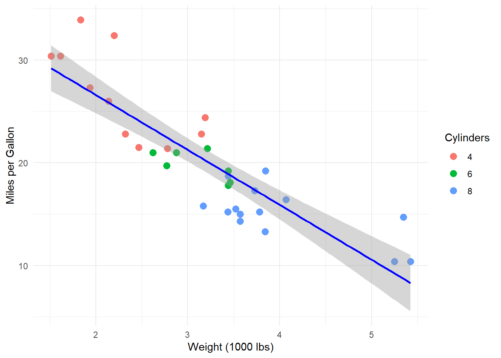

![]()

This handbook provides a comprehensive guide for installing, configuring, and using Positron, Quarto, and Zotero for writing quantitative academic research papers.
1 Installation
This section will guide you through the installation and setup of Positron, Quarto, and Zotero for writing quantitative academic research papers.
1.1 Install R & Positron & Quarto
First, we need to download and install R, Positron and Quarto.
Follow the instructions on CRAN mirror to download and install R.
Follow the instructions on Positron Download to download Positron.
Run SETUP and install Positron. Check all of the boxes when asked to.

- Follow the instructions on Quarto Get Started to download and install Quarto.
1.2 Set up System Environment Variables
Next, we need to set up the system environment variables for proxys.
For Windows:
Open the Windows Start Menu and search for
Env.Click on
Edit the system environment variables.In the System Properties window, click on the
Environment Variablesbutton.In the Environment Variables window, under the
System variablessection, click on theNewbutton.In the New System Variable window, enter
HTTP_PROXYas the Variable name andhttp://127.0.0.1:xxxxas the Variable value. Click OK. (Replacexxxxwith the port number you are using for your proxy.)Repeat step 5 to create another system variable named
HTTPS_PROXYwith the same valuehttp://127.0.0.1:xxxx.Repeat step 5 to create another system variable named
NO_PROXYwith the valuelocalhost,127.0.0.1.Click OK to close the Environment Variables window. Click OK to close the System Properties window.
For Mac:
Work in progress.
1.3 Join Github Eduction
To use Github Copilot, we need to join the Github Education program.
Open your web browser and go to GitHub Education.
Click on the
Join GitHub Educationbutton.Follow the instructions to verify your student status and complete the application process.
1.4 Update Positron and Set Up Github Copilot Chat
Now, we need to update Positron and set up Github Copilot Chat.
Open Positron.
Click on the
ManageIcon on the bottom left corner.Click on
Settingsto open the Settings tab.In the Settings tab, search for
channel, and switch thereleasestodailies.Click on the
ManageIcon on the bottom left corner. Click onCheck for Updatesto update Positron to the latest version. After the update is complete, restart Positron.Repeat step 2 & 3 to open the Settings tab again.
In the Settings tab, search for
assistant. Check on the boxEnable Positron Assistant.Click on the
ChatIcon on the left sidebar to open the Chat tab.In the Chat tab, click on
add model providerbutton.In the Configure Language Model Provider window, select
GitHub Copilot. Click onSign in.In the GitHub login page, enter your GitHub credentials to sign in.
After signing in, you will be redirected back to Positron. You can now use the LLMs provided by GitHub Copilot to assist with your coding.
1.5 Install R Package Manager
Next, we need to install the R Package Manager to manage R packages.
Open Positron. Click on the
ExtensionsIcon on the left sidebar.Search for
Positron R Package Manager. Click onInstallto install the extension.Once the extension is installed and activated, you can find the R Package Manager 📖 icon on the left sidebar.
Drag the 📖 icon to the secondary sidebar on the right.
1.6 Install Zotero
Finally, we need to download and install Zotero for managing references.
Download the Zotero installer for your operating system from the Zotero Download page.
Run the installer and follow the on-screen instructions to complete the installation.
Open Zotero, go to
Edit-Preferences, create and log into an account to sync your references. ClickNew Collectionin the top left corner to create a new collection in My Library, then click the magic wand icon on the right to add any literature by DOI to that collection.Download and extract the Zotero Addons plugin.
Open Zotero, click on
Toolsin the top menu bar, selectAdd-ons, click thegearicon, selectInstall Add-on From File, and choose the.xpifile downloaded in step 4.Select
Tools-Add-on Market, install theBetter BibTeX for Zoteroplugin for better BibTeX support.In the library, right-click on the title bar and check
Citation Keyto display citation names.Select
Edit-Preferences-Better BibTeX, in theCitation key format, keepauth.lower + year.Right-click on the literature library you want to export, select
Export Collection, checkKeep updated, name the filereferences.biband save it to your paper project folder.
2 Usage
This section will guide you through the usage of Positron, Quarto, and Zotero for writing quantitative academic research papers.
2.1 Fetch ORCID Template
Now, every time before you start writing a new paper, we could install the ORCID template for better formatting.
Open Positron, create a qmd file as your transcript. Click on
TERMINALon the bottom sidebar.In the terminal, type the following command and press Enter:
quarto add kv9898/orcid.Enter
Ywhen asked to trust the authors and to continue.You can now work on an ORCID template. Copy and paste the example syntax from here: ORCID Template.
Click
Previewon the top bar to try compile the document. Follow the instructions on the terminal to install any missing packages.
2.2 YAML header
You can make changes to the default YAML header to fit your needs. Refer to the comments on the code in the template for more information.
---
title: Orcid Template #Change article title
subtitle: with affiliation #Change article subtitle
date: last-modified #Set article date to last modified time, or manually set to specific date, e.g., '2024-06-01'
authors:
- name: Dianyi Yang #Change author name
email: dianyi.yang@politics.ox.ac.uk #Change author email
orcid: 0009-0004-4652-3429 #Change author ORCID
affiliations: #Change author affiliations
- ref: ox #Select affiliation, must match id in affiliations section below
- ref: sec #Select affiliation, must match id in affiliations section below
corresponding: true #Set as corresponding author
equal-contributor: true #Set as equal contributor
- name: Yang Dianyi #Can add multiple authors
orcid: 0009-0004-4652-3429
affiliations:
- ref: ox
- name: Someone else
affiliations:
- ref: ox
- ref: sec
orcid: 0009-0009-9108-5436
equal-contributor: true
affiliations: #Set affiliations
- id: ox #Change affiliation code
name: Department of Politics and International Relations, University of Oxford
- id: sec #Can set multiple affiliations
name: Second Institute
format: #Choose compilation format
#native: default #Compile to native HTML format
#docx: default #Compile to Word format
orcid-pdf: #Compile to PDF format
keep-tex: true #Choose whether to keep .tex file, usually required for journal submission
number-sections: true #Choose whether to number sections
cover: false #Choose whether to include cover, if true, value is cover.pdf
toc: false #Choose whether to include table of contents
toc-newpage: false #Choose whether table of contents starts on new page
bibliography: references.bib #Set bibliography file
csl: extra/apa.csl #Set citation format
abstract: This is an abstract. #Modify abstract content
keywords: a, b, c #Modify keywords
acknowledgements: This is an acknowledgement. #Modify acknowledgements content
---2.3 An Example Regression Analysis
Here is an example regression analysis using the ORCID template and the mtcars dataset to show you some basic syntax when you are writing a quantitative academic research paper.
First, let’s examine the relationship between car weight and fuel efficiency using a scatter plot.
Insert an r code cell by clicking the Insert Code Cell button on the top bar, and copy and paste the following code into the code cell:
# Assign a label to the scatter plot for cross-referencing
# Labels for figures should have the prefix "fig-"
#| label: fig-scatter
# Assign a caption to the scatter plot
#| fig-cap: "Relationship between Car Weight and Fuel Efficiency"
# Set echo, warning, and message to false for the plot output only
#| echo: false
#| warning: false
#| message: false
# Install the necessary packages
install.packages(c("ggplot2", "dplyr"))
# If the packages are already installed, you can skip the above line
library(ggplot2)
library(dplyr)
# Create descriptive statistics plot
ggplot(mtcars, aes(x = wt, y = mpg)) +
geom_point(aes(color = factor(cyl)), size = 3) +
geom_smooth(method = "lm", se = TRUE, color = "blue") +
labs(
x = "Weight (1000 lbs)",
y = "Miles per Gallon",
color = "Cylinders"
) +
theme_minimal()Next, we’ll perform a regression analysis. Equations written in syntax should be covered by double dollar signs $$ ... $$ and be assigned a label using {#label} for cross-referencing.
$$
mpg = \beta_0 + \beta_1 \cdot weight + \beta_2 \cdot cylinders + \epsilon
$$ {#eq-regression} #Labels for equations should have the prefix "eq-"\[ mpg = \beta_0 + \beta_1 \cdot weight + \beta_2 \cdot cylinders + \epsilon \tag{1}\]
We can also use & to align equations. For example, if we want our equations to be aligned at the equal signs and quote them as one group, we can write:
$$
\begin{aligned}
1+2&=3\\
3+4&=7\\
11&=5+6
\end{aligned}
$$ {#eq-group}Note that here we use \begin{aligned} ... \end{aligned} to align a group of equations, and we use \\ to indicate line breaks, and & to indicate the alignment point.
The three equations are now quoted as one group and aligned at the equal signs:
\[ \begin{aligned} 1+2&=3\\ 3+4&=7\\ 11&=5+6 \end{aligned} \tag{2}\]
Finally, let’s create a regression table to summarize our regression results. We will use the modelsummary package to create a well-formatted regression table.
# Assign a label to the regression table for cross-referencing
# Labels for tables should have the prefix "tbl-"
#| label: tbl-regression
# Assign a caption to the regression table
#| tbl-cap: "Regression Results: Fuel Efficiency Model"
# Set echo, warning, and message to false for the plot output only
#| echo: false
#| warning: false
#| message: false
library(modelsummary)
# Fit regression models
model1 <- lm(mpg ~ wt, data = mtcars)
model2 <- lm(mpg ~ wt + cyl, data = mtcars)
model3 <- lm(mpg ~ wt + cyl + hp, data = mtcars)
# Create regression table
modelsummary(
list("Model 1" = model1, "Model 2" = model2, "Model 3" = model3),
stars = TRUE,
gof_map = c("nobs", "r.squared", "adj.r.squared")
)| Model 1 | Model 2 | Model 3 | |
|---|---|---|---|
| + p < 0.1, * p < 0.05, ** p < 0.01, *** p < 0.001 | |||
| (Intercept) | 37.285*** | 39.686*** | 38.752*** |
| (1.878) | (1.715) | (1.787) | |
| wt | -5.344*** | -3.191*** | -3.167*** |
| (0.559) | (0.757) | (0.741) | |
| cyl | -1.508** | -0.942+ | |
| (0.415) | (0.551) | ||
| hp | -0.018 | ||
| (0.012) | |||
| Num.Obs. | 32 | 32 | 32 |
| R2 | 0.753 | 0.830 | 0.843 |
| R2 Adj. | 0.745 | 0.819 | 0.826 |
The equations, figures, and tables are automatically numbered in a correct sequence, and could be cross-referenced in the text.
To create proper cross-references in Quarto, use the following syntax: @label at where you want to make cross references, where label is the label you assigned to the figure, table, or equation. For instance, @eq-regression refers to the regression equation Equation 1, @eq-group refers to the group of equations Equation 2, @fig-scatter refers to the scatter plot Figure 1, and @tbl-regression refers to the regression table Table 1. You could refer to Quarto Cross-References Documentation for more information on cross-reference.
2.4 An Example Literature Review
Here is an example of how to use Quarto for literature citations.
First, make sure you have added the references.bib file to your project according to the previous instructions, and correctly set the bibliography field in the YAML header.
Second, make sure you have downloaded and installed the corresponding citation format *.csl file, and correctly set the csl field in the YAML header. Citation formats can be downloaded from the CSL repository.
Now, you can use @citation_key in the text to cite literature. We can place citations at the beginning of sentences. For example:
@lake2011 Lake (2011) argues that the “isms†debate in international relations research is harmful.
Or, we can also place citations at the end of sentences:
The “isms†debate in international relations research is harmful [@lake2011] (Lake, 2011).
To cite multiple articles, use comma-separated citation keys, for example:
Here are two good articles [@lake2011, @hale2020] (Hale, 2020; Lake, 2011).
Finally, add the following content at the end of the document to generate a reference list:
# References {.unnumbered} #Add unnumbered references section
::: {#refs} #Place references here, not at the end of document
:::References
Hale, T. (2020). Transnational Actors and Transnational Governance in Global Environmental Politics. Annual Review of Political Science, 23(1), 203–220. https://doi.org/10.1146/annurev-polisci-050718-032644
Lake, D. A. (2011). Why “isms†Are Evil: Theory, Epistemology, and Academic Sects as Impediments to Understanding and Progress1: Why “isms†are Evil. International Studies Quarterly, 55(2), 465–480. https://doi.org/10.1111/j.1468-2478.2011.00661.x
Reuse
Citation
BibTeX citation:
@online{fu2025,
author = {Fu, Yuxin and Yang, Dianyi},
title = {Research 101: {How} to Work as a Modern Quantitative Social
Scientist?},
date = {2025-09-27},
url = {https://bim382.github.io/blog/2025-09-27-PositronHandbook/},
langid = {en}
}
For attribution, please cite this work as:
Fu, Y., & Yang, D. (2025, September 27). Research 101: How to
work as a modern quantitative social scientist? https://bim382.github.io/blog/2025-09-27-PositronHandbook/